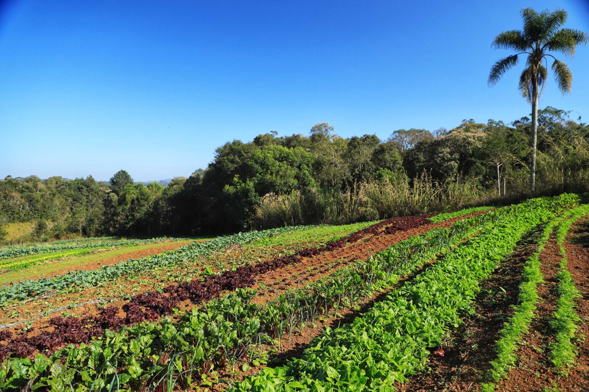
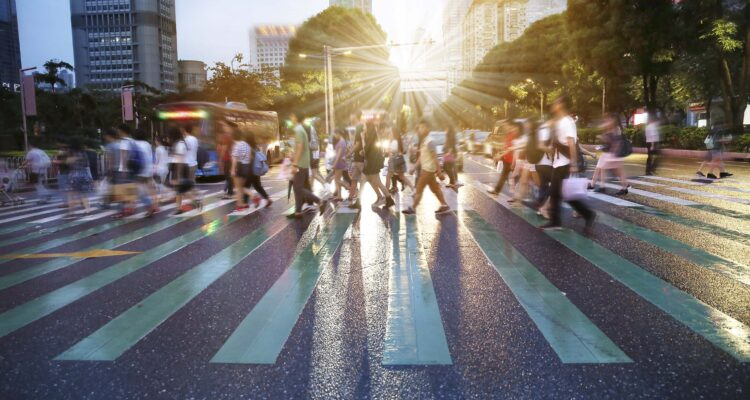
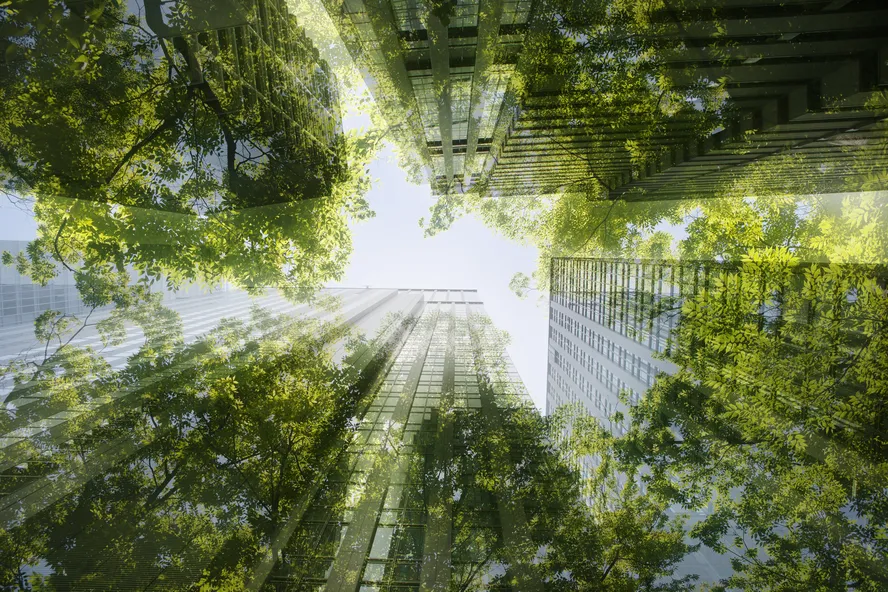

Aspectos do Campo
No campo, encontramos um estilo de vida que é profundamente enraizado na natureza e nas tradições. Aqui estão alguns pontos chave:
- Relação com a Natureza: A vida rural está fortemente conectada com o ambiente natural, oferecendo uma paisagem calma e natural.
- Economia Local: A economia é muitas vezes baseada em agricultura e produção local, com um forte foco em métodos tradicionais e sustentáveis.
- Comunidade Coesa: A proximidade física e a interação diária entre os residentes ajudam a criar um senso de comunidade e apoio mútuo.
Aspectos da Cidade
Em contraste, as cidades oferecem um ambiente dinâmico e diversificado. Os aspectos principais incluem:
- Oportunidades Econômicas: As cidades são centros de negócios e inovação, proporcionando uma ampla gama de oportunidades de emprego e desenvolvimento profissional.
- Infraestrutura Avançada: Com serviços modernos e uma rede de transporte eficiente, as cidades facilitam a vida cotidiana e o acesso a recursos.
- Cultura e Entretenimento: A vida urbana é rica em opções culturais, incluindo teatros, museus e uma variedade de opções de entretenimento.
Transição e Oportunidades
A transição do campo para a cidade pode ser um desafio, mas também apresenta oportunidades únicas:
- Adaptação e Crescimento: Mudanças no ambiente e estilo de vida podem promover crescimento pessoal e novas habilidades.
- Novas Perspectivas: A experiência de viver em diferentes ambientes pode enriquecer a perspectiva de vida e a compreensão cultural.
- Oportunidades de Networking: A vida na cidade oferece oportunidades para expandir redes profissionais e sociais.